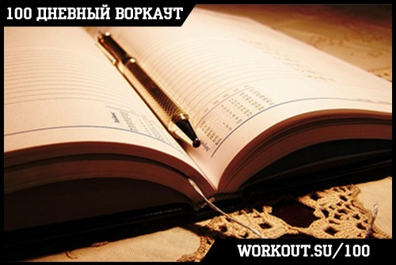
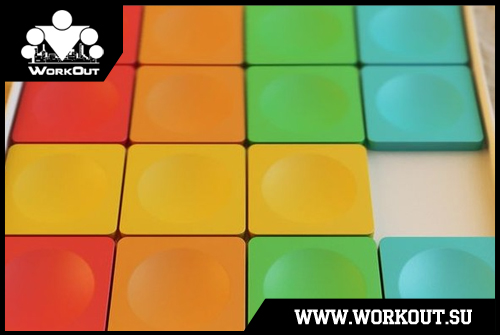

100 Дневный воркаут
<==== Вернуться к оглавлению
День 8. Баланс калорий (сколько нужно калорий в день?)
Первые 7 дней остались позади, и с этим можно поздравить всех участников нашей обучающей программы
"100-дневный воркаут"
! За прошедшую неделю мы довольно детально разобрали все составляющие нашей тренировки в рамках
БАЗОВОГО блока
, поговорили о том, как правильно делать Разминку и Заминку, научились правильно делать основные упражнения (Подтягивания, Приседания и Отжимания от пола) и даже начали тренировать гибкость!
Но время не стоит на месте и нам пора двигаться дальше, а это значит что настала пора заняться вашим питанием!
Баланс калорий
Первым делом я бы хотел рассказать вам о концепции так называемого "баланса калорий", без которой все попытки привести себя в форму будут больше напоминать танцы с бубнами вокруг костра, нежели планомерное движение к цели. Если говорить по-простому, то вся та пища, которую вы потребляете в течение дня имеет определенную энергетическую ценность, которая обычно измеряется в калориях. Эти калории расходуются для обеспечения жизнедеятельности и запасаются в организме на будущее.
У большинства из нас уже есть сложившиеся режимы питания, связанные с тем, как организован наш день и с нашими привычками. Опять же для большинства, наш вес представляет собой плюс/минус постоянную величину. Это связано с тем, что мы потребляем за день примерно такое же количество калорий, которое и тратим. Здесь и начинается самое интересное. Если вы хотите сбросить вес - то для этого необходимо уменьшить количество потребляемых калорий (примерно на 10-15%), в случае же если вы хотите набрать массу, то нужно это количество увеличить (тоже примерно на 10-15%). Здесь ещё определенную роль будет играть эффективность работы вашего ЖКТ (желудочно-кишечного тракта) и то, насколько хорошо он усваивает пищу, но мы оставим этот момент за рамками сегодняшней темы.
Прочитав последний абзац у вас возник вопрос - а как мне определить свой баланс калорий? В интернете можно найти множество различных калькуляторов и сложных формул для определения количества калорий, которые необходимо потреблять в определенном возрасте и при определенном образе жизни. В итоге получается некое усредненное число, происхождение которого довольно загадочно. На мой взгляд это всё довольно непонятно, тем более, когда есть способ гораздо проще и точнее. Если мы условимся, что ваш ежедневный рацион является примерно постоянной величиной (а в рамках недели/месяца так оно для большинства людей и есть), то можно посчитать его калорийность. С другой стороны в интернете так же можно найти огромное количество различных формул для подсчета количества калорий, которые вы сжигаете в течение дня в зависимости от образа жизни, и вашего веса, и вашей активности и т.д. Но эти формулы тоже будут усредненные и неточные. А ведь есть простое, понятное, и удобное уравнение:
Изменение веса = Количество полученных калорий - Количество потраченных калорий
(считается за промежуток времени)
Все, больше НИЧЕГО придумывать не нужно. Хотите похудеть? Уменьшаете количество получаемых калорий. Хотите набрать вес? Увеличиваете х количество получаемых калорий. Здесь некоторые могут возразить, что по этой формуле можно ведь худеть и за счет увеличения y, но тут такой момент, что сейчас 100-дневка сжигает среднему участнику на 80кг, ну где-то так 100-150ккал, к концу программы будет сжигать до 500ккал. 100ккал заедаются одним-двумя яблоками. 500ккал - это небольшой кусочек тортика. Поэтому заесть эффект от тренировки можно вообще не задумываясь.
Калорийность
Вернемся к основной теме. Калорийность позволяет привести сложный состав нашей пищи к единому знаменателю. Так, 1 грамм белков или углеводов дает 4 килокалории, а 1 грамм жиров дает 9 килокалорий. Поэтому всё, что вам необходимо сделать для определения своего баланса калорий - это просто пересчитать калорийность всех тех продуктов, которые вы поглощаете в течение дня.
*** ВАЖНО ***
Калорийность продукта всегда считается в сухом/сыром/неприготовленном виде! Несмотря на то, что в процесс приготовления крупы впитывают воду, а, например, кусок мяса воду отдает, в большинстве случаев соотношение белков, жиров и углеводов остается прежним. То есть 50 грамм сухого риса дают такой же БЖУК, что и 200 грамм их же разваренных.
Данные по калорийности различных продуктов можно взять, например,
здесь
.
Если вам лениво сидеть с калькулятор и все высчитывать самостоятельно, то в интернете много сайтов предоставляющих подобные сервис. Есть отличное приложение для мобильных устройств под названием
MyFitnessPal
, с помощью которого можно очень удобно считать за количеством потребляемых калорий!
Дневник питания

После прочитанного у вас в голове должны отложиться два главных момента: первый - еда дает калории, которые можно подсчитать; второй - для того, чтобы снизить/увеличить вес, необходимо нарушить баланс калорий в ту или иную сторону. Я знаю, что подсчитывать калории - не самое увлекательное дело в мире, но это необходимо сделать, если вы действительно ставите перед собой цель изменить себя. Есть такая поговорка - "нельзя управлять тем, что нельзя измерить", и для нашей ситуации она подходит как нельзя кстати!
Нередко можно слышать от людей (даже на нашем форуме часто возникают такие темы), мол "питаюсь как вол, а массу набрать не могу", или "вообще ничего не ем после шести, а вес не уходит". Поверьте, если вы не ведете подсчетов, то ваши приблизительные оценки на самом деле могут быть очень далеки от реальности, и именно поэтому вы никак не можете достичь желаемой цели!
Так что, в течение ближайшей недели ходим и записываем все, что съедаем в течение дня, анализируем, определяем баланс калорий и делаем выводы. Хотите сбросить вес - уменьшайте количество потребляемых калорий, хотите набрать вес - увеличивайте ;)
Готовые схемы

Я считаю, что заняться подобным подсчетом необходимо хотя бы для собственного развития, но если вам лениво или нет времени, то в одном из ближайших инфо-постов вас будет ждать готовая схема питания, которую вы сможете использовать. В ней уже рассчитана калорийность различных блюд, определены размеры порций и составлены сбалансированные рационы. Стоит отметить, что это сделано сразу для 3-х случаев: сброса лишнего веса, набора дополнительной массы и сохранения текущего положения дел.
Напоследок
Поскольку баланс калорий - это общее количество калорий, потребляемых за день, то, на самом деле, не так важно, сколько именно приемов пищи у вас в день. Ваша главная задача - получать необходимое количество калорий и следить за тем, чтобы их соотношение было примерно таким: 1 (жиры) к 2 (белки) к 3 (углеводы). Если переводить в проценты, то получится примерно 17% (жиры), 33% (белки), 50% (углеводы). Это не догма, а просто рекомендуемая многими организациями в области здравоохранения и питания, дающая примерное соотношение с которого вы можете начинать. Далее уже в зависимости от ваших целей вы можете менять соотношение потребляемых белков, жиров и углеводов.
Так же нужно следить за тем, чтобы ваше питание было максимально разнообразным и включало в себя различные источники белков, жиров и углеводов, а так же клечатку, витамины и минералы.
Стоит помнить, что у вашего организма так же существуют определенные ограничения по поводу того, сколько белков, сколько углеводов и сколько жиров он может переработать за один прием пищи в пользу себе (я уже ранее писал про эффективность работы ЖКТ). Таким образом лучше равномерно разделить все ваши калории на несколько приемов пищи.
======> День 9. Белки, Жиры и Углеводы (ценность Белков)